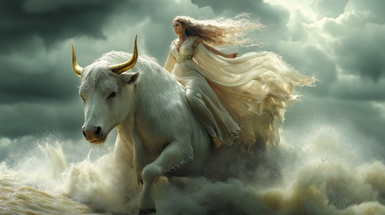

Europa was a mortal princess of Phoenicia. While gathering flowers by the sea, she was approached by Zeus, disguised as a beautiful, gentle white bull. Trusting the creature, Europa climbed onto its back—and Zeus carried her across the ocean to the island of Crete.
There, she became the mother of Minos, Rhadamanthys, and Sarpedon, legendary kings and judges of myth. Europa’s abduction symbolized both loss and the founding of powerful dynasties.
Through the Bull’s Eyes
I danced among the fields of spring
With laughter’s crown and woven ring
When skies grew still and oceans sighed—
He came in white with golden eyes
A beast of peace, a silent shore—
Yet hid a storm forevermore
Through the bull’s eyes, I crossed the tide
Stolen from home on winds that lied
No scream could break, no father save—
The bull of gods became my grave
He bowed his head, I climbed with trust
The grass gave way to foam and dust
The shore fell back, the waves grew black—
The gentle beast would not turn back
No temple's prayer, no mortal cry—
Could turn the bull that owned the sky
Through the bull’s eyes, I crossed the tide
Stolen from home on winds that lied
No scream could break, no father save—
The bull of gods became my grave
Upon strange shores he laid his claim—
A crown of stars, a gilded name
And from our grief, a kingdom born—
Europa crowned from love and scorn
He bore me not to love... but to legacy.
Through the bull’s eyes, I crossed the tide
No god, no king, no tears could hide
From foam to throne, from heart to grave—
The sea still sings the soul he gave
The bull, the bride, the breaking sky—
The stars remember where I lie